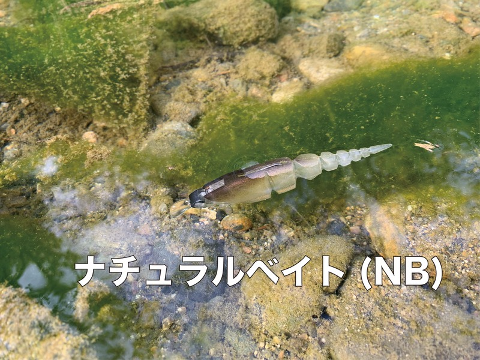
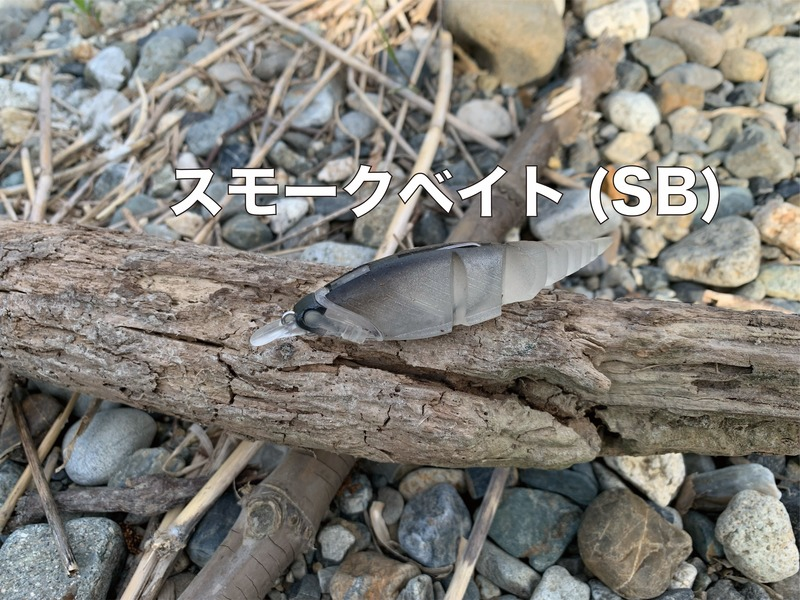
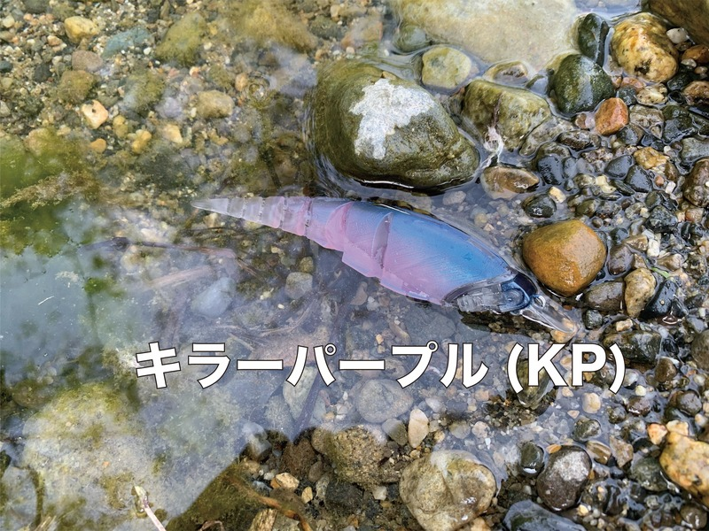
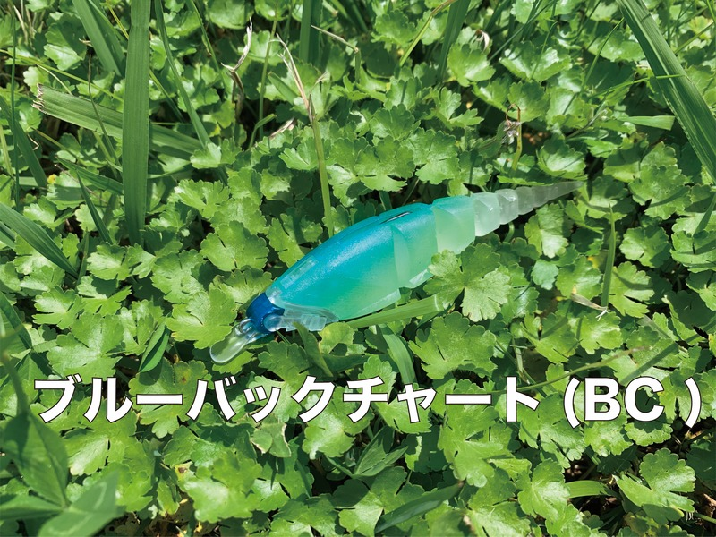
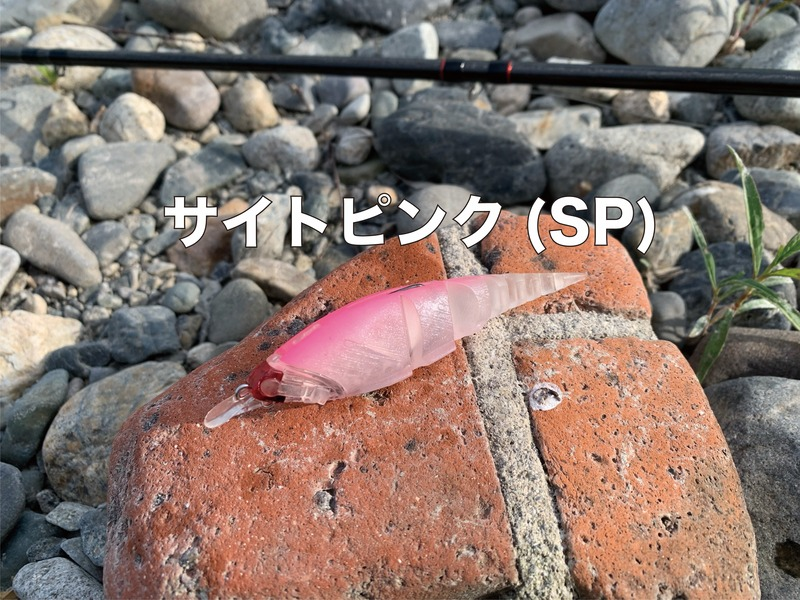

ベータミノー
（β-MINNOW）
ベータミノー（β-MINNOW）はTTTのハイブリッドミノーです。
「もしミノーをカバーの中でダートさせることができたら、凄いことが起こるに違いない」。その発想から、SSSとエラストマーを適材適所に使って実現したミノーがβ-MINNOWです。琵琶湖に工房を構えるルアーメーカー・TTTが、α-SHADに続いて送り出したモデルで、BODY・FRAME・SKIN・JOINTの4パーツをそれぞれ分離・交換できるのも大きな特徴です。

画像出典:TTT公式HP
スペック
- メーカー
- TTT
- タイプ
- ハイブリッドミノー（フローティング）
- 全長
- 95mm（3.7in）
- 自重
- 約10g（3/8oz）
- 構成
- BODY・FRAME・SKIN・JOINTの4パーツ（分離・交換可）
- カラー
- 全5色
- ターゲット
- ブラックバス
- 価格
- 3,685円（税込）
- 発売
- 2026年10月24日
▼今すぐチェック


ベータミノーの特徴
ロッドワークではダート、ただ巻きでは艶めかしく泳ぐ、カバーに入れられるミノー
-
体を捻りながらの規則的なダート
ロッドワークでは、体を捻りながら規則的にダートする。ミノーなのにカバーの中でもダートさせられるのが、β-MINNOWが目指した性能だ。
-
リップの振動×エラストマーの自然な挙動
リーリング（ただ巻き）では、リップによる振動とエラストマーの自然な挙動が融合。ハードルアーの泳ぎとソフト素材のしなやかさを両方持たせている。
-
障害物回避とフッキングを両立したSSS
α-SHADのSSS Ⅱで抱えた問題を徹底的に見直し、高い障害物回避性能とフッキング性能を実現。JOINTとBODYの接続はワンタッチで着脱でき、SKINのストッパーがキャスト時の衝撃を吸収する。FRAMEは接着を一切行わないインサート成型で、精度と強度を両立している。
ベータミノーの使い方
基本はロッドワークでのダート。カバーの際や中にキャストして、ロッドを小刻みに動かすと、体を捻りながら規則的にダートしてバスを誘う。
ただ巻きでは、リップの振動とエラストマーの自然な動きで泳ぐので、オープンエリアを巻いて探ることもできる。ダートとただ巻きを組み合わせて、その日のバスの反応を探っていきましょう。
ベータミノーの得意な状況
普通のミノーでは根掛かりが怖くて入れにくい、ウィードやブッシュなどのカバー周りでバスを狙う状況が最大の出番。
公式でも「タックルボックスに一つ入れておけば、きっとお役に立てる場所があるルアー」と紹介されていて、ミノーの動きでカバーを攻めたい場面で選びたい1本です。
ワンポイント
腹部にウエイトシールを貼ると、サスペンドさせたり、ボトムジャークで使ったりすることもできます。
使ったあとは、フックが錆びないようにボディを外して乾かしておくのがオススメです（α-SHADの注意事項より）。
カスタムパーツ・モデルの使い分け
| 仕様 | 内容 | ポイント |
|---|---|---|
| β-MINNOW（ノーマル） | ダートアクションに注力したFRAME | カバーの中でのダートが得意な基本モデル |
| β-MINNOW（Rattle IN） | BODYにラトルを搭載 | 音でアピールを上げたい時に（3,685円） |
| FRAME（Reeling Custom） | ただ巻きのアクションに焦点を当てた交換用FRAME | ロッドワークでは移動距離の少ない首振りも得意（770円） |
| Long SKIN | ただ巻きでより艶めかしく泳ぐSKIN | 追加予定 |
※内容と価格は公式ショップ・製品情報ページの記載より（2026年10月時点）。
カラーラインナップ
β-MINNOWは全5色展開。かっこ内はフレームのカラーです。

ナチュラルベイト（NB）フレームはガンメタゴールド。小魚に似せたナチュラルなカラー。

スモークベイト（SB）フレームはガンメタシルバー。透け感のあるスモークで、クリアな水で見切られにくい。

キラーパープル（KP）フレームはメタリックパープル。パープル系のアピールカラー。

ブルーバックチャート（BC）フレームはメタリックブルー。ブルーとチャートで目立たせたい時に。

サイトピンク（SP）フレームはメタリックレッド。アングラーから見やすいピンク。
画像出典:TTT公式HP
ベータミノーに似ているルアー
-
 ソフトハニタス4
マドタチ
詳細はこちら＞
ソフトハニタス4
マドタチ
詳細はこちら＞
エラストマー製で、ヒレ角度とパーツ交換で動きを変えられるソフトルアー。カスタムしながら使いたい時の持ち替え先に。
-
 ソフトハニタスクランク3
マドタチ
詳細はこちら＞
ソフトハニタスクランク3
マドタチ
詳細はこちら＞
中空ボディの強波動ソフトクランク。ダートではなく、巻いてカバー周りを攻めたい時に。
-
 ゴリドラス
ジャッカル
詳細はこちら＞
ゴリドラス
ジャッカル
詳細はこちら＞
エラストマー素材のボトム系スイムベイト。カバーではなくボトムを攻めたい時の持ち替え先に。
-
 クラッシュシティ インフィルトレイター
ラパラ
詳細はこちら＞
クラッシュシティ インフィルトレイター
ラパラ
詳細はこちら＞
エラストマー製のスイムベイト。巻いて誘いたい時の選択肢に。
-
 レアリス リグルシャッド2.5
DUO
詳細はこちら＞
レアリス リグルシャッド2.5
DUO
詳細はこちら＞
ベイトフィッシュサイズのシャッドテール。小さめのシルエットで食わせたい時に。